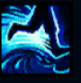
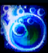
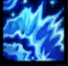
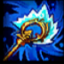
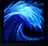

Nami
| Nami The Tidecaller | |
|---|---|
| Release date | 07.12.2012 |
| Class | Enchanter |
| Positions | Support |
| Resource | Mana |
| Range type | Ranged |
| Adaptive type | Magic |
| Base statistics | |||
| Health | 475+74 | Mana | 365+43 |
| Health regen. | 5.5+0.55 |
Mana regen. | 11.5+0.4 |
| Armor | 29+4 | Attack damage | 51+3.1 |
| Magic resist. | 30+0.5 | Crit. damage | 175% |
| Move. speed | 335 | Attack range | 550 |
Nami este o tânără și încăpățânată vastaya a mării. Când a fost încălcat acordul străvechi dintre tribul Marai și targonieni, ea a fost prima care a părăsit oceanul și s-a aventurat pe uscat. Neavând de ales, a decis să ducă singură la bun sfârșit ritualul sacru care i-ar menține poporul în siguranță. În haosul acestei noi ere, Nami își înfruntă viitorul incert cu hotărâre și curaj, folosindu-și sceptrul mareic pentru a invoca însăși puterea oceanelor. |  |
MAREE DEZLĂNȚUITĂ Atunci când abilitățile lui Nami lovesc campioni aliați, aceștia primesc un bonus scurt la viteza de mișcare. |
||
|---|---|---|---|---|
 |
ÎNCHISOARE ACVATICĂ Trimite spre zona-țintă o bulă care provoacă daune și amețește toți inamicii la impact. |
|||
 |
FLUX ȘI REFLUX Dezlănțuie un torent de apă ce ricoșează de la campionii aliați la cei inamici, vindecând aliații și provocându-le daune inamicilor. |
|||
|  |
BINECUVÂNTAREA ALESEI MĂRII
Oferă pentru o scurtă perioadă de timp putere sporită unui campion aliat. Atacurile de bază și vrăjile aliatului provoacă daune magice bonus și încetinesc ținta. |
|||
 |
VAL MAREIC Invocă un val mareic uriaș care aruncă inamicii în sus, încetinindu-i și provocându-le daune. Aliații loviți primesc de două ori efectul ''Mareei dezlănțuite''. |